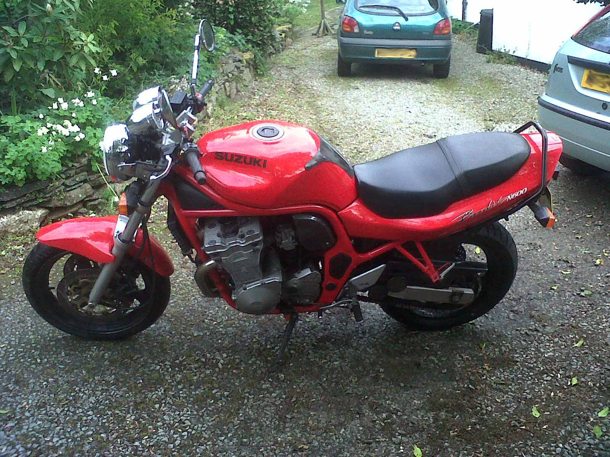
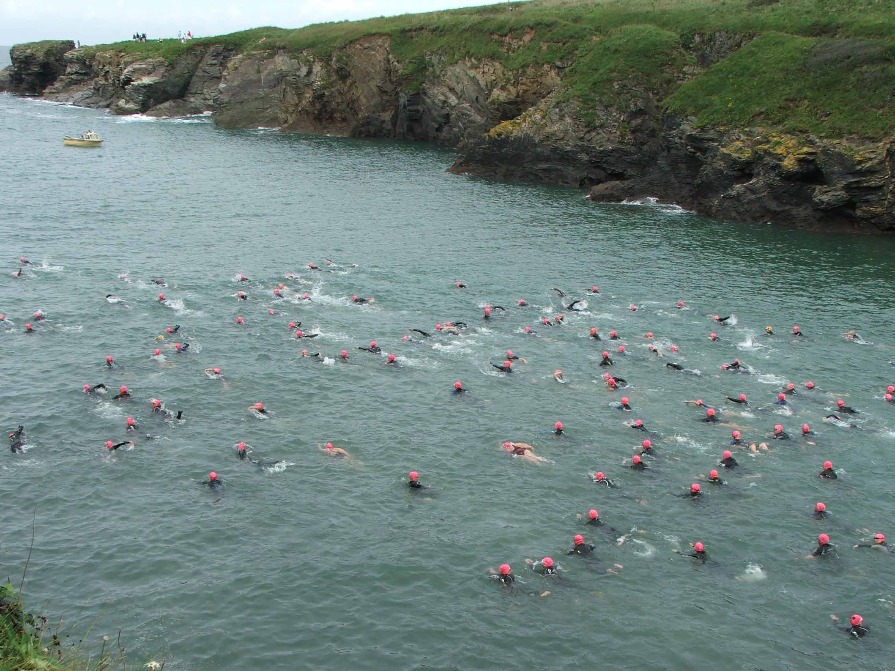
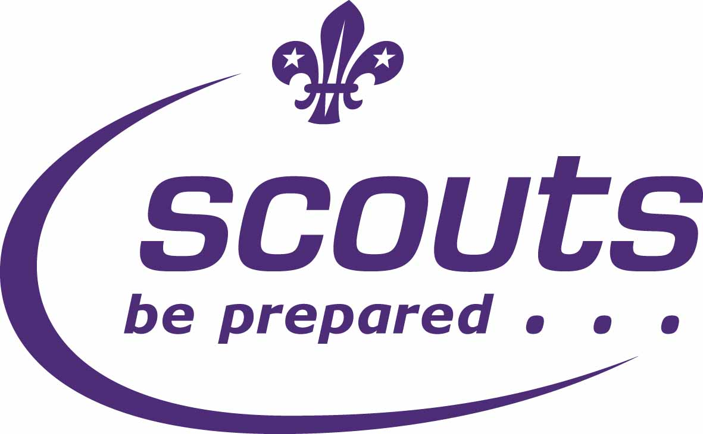

Interests
Motorcycling
I have been riding motorcycles since the age of 16. My first bike, a Yamaha Jog-R was only a moped but it was my first taste of freedom and independence. When I turned 17 I got my first real bike (a Suzuki EN125-2A). My dad taught me how to ride with gears and within a few hours I was riding around the open roads of Cornwall. I took my motorcycle test 3 months after turning 17 and passed first time. After working to save up enough money I was able to get rid of my 125 and buy myself a Suzuki Bandit 600. Riding my Bandit is one of the most enjoyable things I have ever done in my life so far.
Apple

In my opinion Apple computers are incredibly well designed and amazing to use. I do all my coding on my MacBook Pro as I love the
speed at which it works and the ease it runs multiple programs without any problems. I have always liked Apple products but it was
not until I got to University that I was able to afford my MacBook.
Getting my first Apple product then set off a buying spree
as in the next year I had also bought myself an iPhone and an iPad. I love the way Apple products work and I can see myself using them
long into the future. This however does not mean I cannot use Windows computers, I am still very competent in using Windows and
Linux based machines.
Swimming

I enjoy swimming and setting myself a challenge. In August 2012 I took on the Big Swim in my home County, Cornwall. This was a 1 mile
open water swim around the coast of Cornwall from Port Gaverne to Port Issac. I had to train very hard in the weeks prior to the swim
to get my fitness up, but it all paid off after I completed the swim with two of my friends in 35 minutes. The sea was rough and it was
very hard swimming against the current but it was a brilliant experience and I cannot wait to take it on again in 2013!
I still regularly swim at my local swimming pool to keep up my fitness and because I really enjoy swimming.
Scouting

I have been in the Scouting movement since I was 5 years old, moving up through Beavers, Cubs, Scouts, Explorers and then becoming a
leader. I am currently in training to be a fully qualified leader and look forward to becoming a volunteering leader when I graduate
from University.
Being part of the Scouts has taught me many useful skills, I know that if it was not for the skills learnt through Scouting that I would
not be the person I am today. I have also completed my Bronze Duke of Edinburgh award while I was a Scout. This was a big achievement of
mine at the time and I enjoyed the challenges it set me.